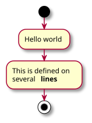
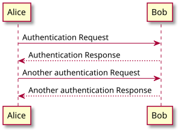
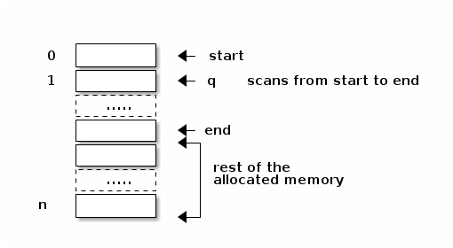

First Entry
Table of Contents
Example entry
Cura is a free slicing software. Besides the fact this is free, Cura is one of the best slicing software options in the industry. It is necessary to have the right profile, matching your printer, loaded to get the best printing experience. The latest version of cura can be downloaded from here.
Test level 2 title
Cura is a free slicing software. Besides the fact this is free, Cura is one of the best slicing software options in the industry. It is necessary to have the right profile, matching your printer, loaded to get the best printing experience. The latest version of cura can be downloaded from here.
Test level 3 title
Cura is a free slicing software. Besides the fact this is free, Cura is one of the best slicing software options in the industry. It is necessary to have the right profile, matching your printer, loaded to get the best printing experience. The latest version of cura can be downloaded from here.




